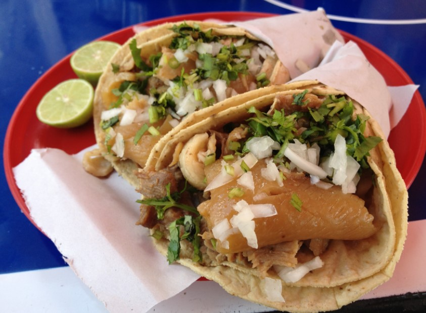
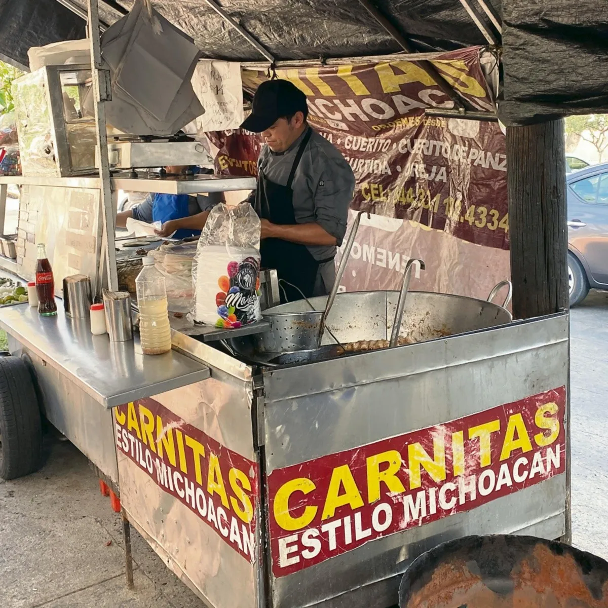

Tacos de Carnitas
Slow-braised pork shoulder, cooked in its own fat until tender and golden. Served on a warm corn tortilla with onion, cilantro, and salsa verde.
$3.50Taquería El Sabor was born from a family tradition rooted in the heart of Michoacán. Our carnitas recipe has been passed down through three generations — pork shoulder slow-braised for hours in its own fat, seasoned with orange, bay leaf, and a touch of cinnamon, until it reaches that perfect balance of crispy edges and melt-in-your-mouth tenderness.
Our tacos al pastor honor the Lebanese-Mexican tradition that transformed street food in Mexico City. We marinate pork overnight in a blend of dried chiles, achiote, and pineapple, then stack it on a vertical trompo and roast it low and slow. Every slice carries decades of culinary craft — and we wouldn't have it any other way.
